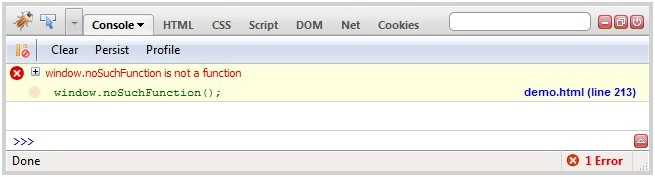
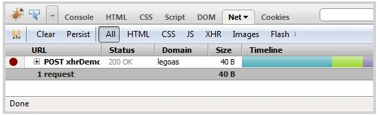
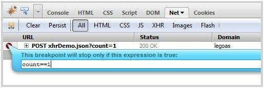
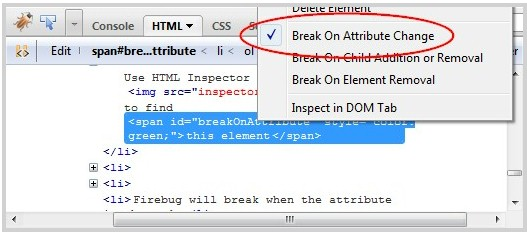
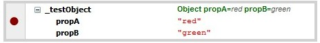

Firebug Breakpoints Demo
These demos illustrate the article Dynamic and Graphical Web Page Breakpoints by John J. Barton and Jan Odvarko, submitted to WWW 2010
New Kinds of Breakpoints
Breakpoints: Quintessential feature of debuggers
- Find the line of source you want to investigate
- Set a breakpoint
- Run the program
- Debugger halts execution, you poke around
Why Setting Breakpoints On Source Does Not Always Work
- Large programs: you forget which line of code does what
- Frameworks: your code is lost in a sea of other code
- Multi-developer: your code and 26 other folks too
User-Interface Oriented Breakpoints
- Solution: Breakpoint first then see the line of code
- Break on UI events: modication, activations, errors
- "Recognize (browse)" rather then "Recall (search)"
Demos
To run the demos:
- Open Firefox 3.5 or newer
- Install Firebug 1.5 or newer
- Reload this page
- Follow the instructions below for each kind of breakpoint
Individual Demos:
- Breakpoints in Dynamic Javascript via eval()
- Break on Next Javascript Call
- Breakpoints on Errors
- Breakpoints on Network Events
- Breakpoints on DOM (HTML) Mutation Events
- Breakpoints on DOM Property Changes
- Breakpoints on CSS Style Rule Changes
- Breakpoints on Event Handlers
- Breakpoints support for Extensions
Breakpoints in Dynamic Javascript via eval()
Dynamic Javascript with User Supplied Filename
- If you are stopped in the debugger, either click the blue continue button or reload the page
- Load the duck and cat functions by AJAX
- Open the Firebug Script Panel and select "payloadCatsAndDucks.js", then set a breakpoint on line 10
- Call the Duck and Cat functions
- You should halt in the debugger on a breakpoint in dynamically created source code
Note the special comment at the end of the source. This comment is parsed by Firebug to set the file name.
Dynamic Javascript with Generated Filename
- If you are stopped in the debugger, either click the blue continue button or reload the page
- Load the duck and cat functions by AJAX
- Open the Firebug Script Panel and select "payloadCatsAndDucks.js", then set a breakpoint on line 10
- Call the Duck and Cat functions
- You should halt in the debugger on a breakpoint in dynamically created source code

In this case the user code did not give a file name, so Firebug created one by computing an MD5 hash of the file, so that it can reset the breakpoints on reload
Breakpoints on Javascript Execution
Break on Next Javascript Call
- If you are stopped in the debugger, either click the blue continue button or reload the page
- Select the Firebug Script Panel
- Click the Break on Next or Pause button ()
- Click this button
- Firebug will break on the event handler
Break on a Generated Event Handler
- If you are stopped in the debugger, either click the blue continue button or reload the page
- Select the Firebug Script Panel
- Click the Break on Next or Pause button ()
- Click this button
- Firebug will break on the browser-generated event handler
These simple examples make the Javascript break on next feature look more useful than it is in practical experience. Timer, XHR, and mouseover events trigger break on next far too often in real-world code
Breakpoints on Errors
Break on a Error Shown in the Console
- If you are stopped in the debugger, either click the blue continue button or reload the page
- Select the Firebug Console Panel
- Click this button
- Click the Breakpoint button ()
- Click the
Fail on Errorbutton again - Firebug will break on the error-generating line
BUG: The Breakpoint image does not update
Break on All Errors
- Select the Firebug Console Panel
- Click the Break on All Errors or Pause button ()
- Click this button
- Firebug will break on the error
Note that this feature was previsously implemented as Break On Errors option accessible in Script panel option menu. Use the Break On All Errors pause button within the Console panel now.
Breakpoints on Network Events
Break On Next Network Event
- If you are stopped in the debugger, either click the blue continue button or reload the page
- Select the Firebug Net Panel
- Click the Break on Next or Pause button ()
- Click this button
- Firebug will break on the XHR event
Conditional Network Breakpoints
- If you are stopped in the debugger, either click the blue continue button or reload the page
- Select the Firebug Net Panel
- Click this button to generate a XMLHttpRequest
- Click on the left hand bar to create a breakpoint for xhrDemo.json URL 
- Right click on the breakpoint and insert following condition
count==1 - Click following buttons to generate XHR with parameter count set to either to 1 or 2
- Firebug will break on the XHR event only if the target URL is xhrDemo.json and a parameter count is available and set to 1
Breakpoints on DOM (HTML) Mutation Events
- If you are stopped in the debugger, either click the blue continue button or reload the page
- Select the Firebug HTML Panel
- Use HTML Inspector to find this element
- Right click on the element and pick Break On Attribute Change menu item. 
- Click this button
- Firebug will break when the attribute is changed.
Breakpoints on DOM Property Changes
- If you are stopped in the debugger, either click the blue continue button or reload the page
- Select the Firebug DOM Panel
- If you are stopped in the debugger, either click the blue continue button or reload the page
- Expand the _testObject to see it's properties
- Click on the left hand bar to create a breakpoint for propA 
- Click this button
- Firebug will break when the property is changing.
Breakpoints on CSS Style Rule Changes
This feature not yet implemented, but we have prototype that shows it can work.
Breakpoints on Event Handlers
This feature not yet implemented
Breakpoints support for Extensions
This feature not yet implemented